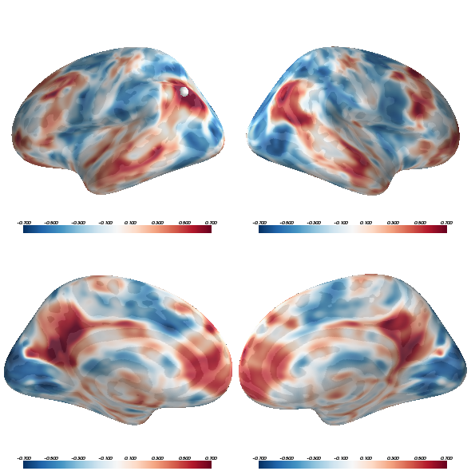

In this example, we show how to build up a complex visualization of a volume-based image showing resting-state correlations across the whole brain from a seed in the angular gyrus. We’ll plot several views of both hemispheres in a single window and manipulate the colormap to best represent the nature of the data.
Python source code: plot_resting_correlations.py
import os
from surfer import Brain, io
print(__doc__)
"""Bring up the visualization"""
brain = Brain("fsaverage", "split", "inflated",
views=['lat', 'med'], background="white")
"""Project the volume file and return as an array"""
mri_file = "example_data/resting_corr.nii.gz"
reg_file = os.path.join(os.environ["FREESURFER_HOME"],
"average/mni152.register.dat")
surf_data_lh = io.project_volume_data(mri_file, "lh", reg_file)
surf_data_rh = io.project_volume_data(mri_file, "rh", reg_file)
"""
You can pass this array to the add_overlay method for a typical activation
overlay (with thresholding, etc.).
"""
brain.add_overlay(surf_data_lh, min=.3, max=.7, name="ang_corr_lh", hemi='lh')
brain.add_overlay(surf_data_rh, min=.3, max=.7, name="ang_corr_rh", hemi='rh')
"""
You can also pass it to add_data for more control
over the visualization. Here we'll plot the whole
range of correlations
"""
for overlay in brain.overlays_dict["ang_corr_lh"]:
overlay.remove()
for overlay in brain.overlays_dict["ang_corr_rh"]:
overlay.remove()
"""
We want to use an appropriate color map for these data: a divergent map that
is centered on 0, which is a meaningful transition-point as it marks the change
from negative correlations to positive correlations.
We'll also plot the map with some transparency so that we can see through to
the underlying anatomy.
"""
brain.add_data(surf_data_lh, -.7, .7, colormap="coolwarm", alpha=.75,
hemi='lh')
brain.add_data(surf_data_rh, -.7, .7, colormap="coolwarm", alpha=.75,
hemi='rh')
"""
This overlay represents resting-state correlations with a
seed in left angular gyrus. Let's plot that seed.
"""
seed_coords = (-45, -67, 36)
brain.add_foci(seed_coords, map_surface="white", hemi='lh')